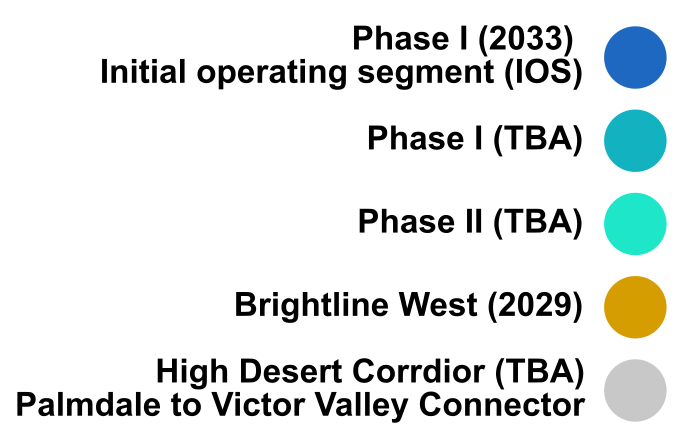
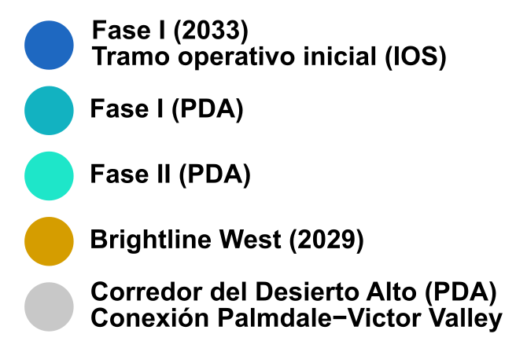
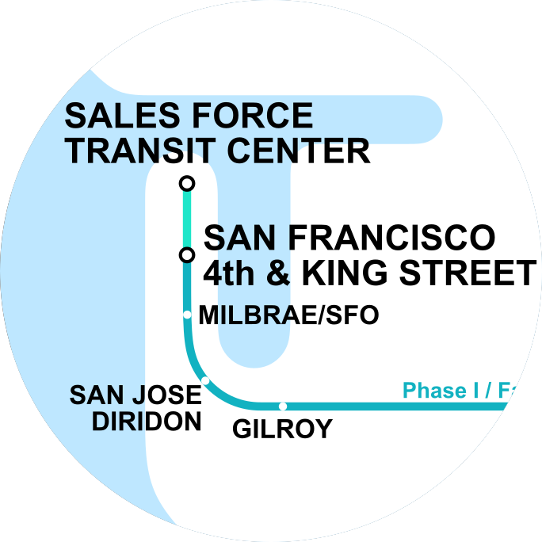
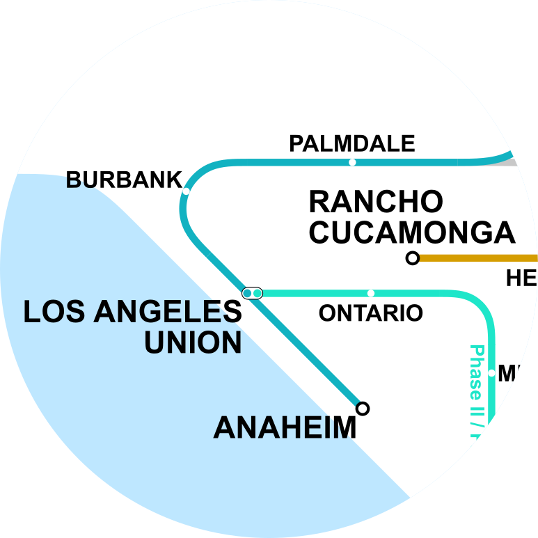
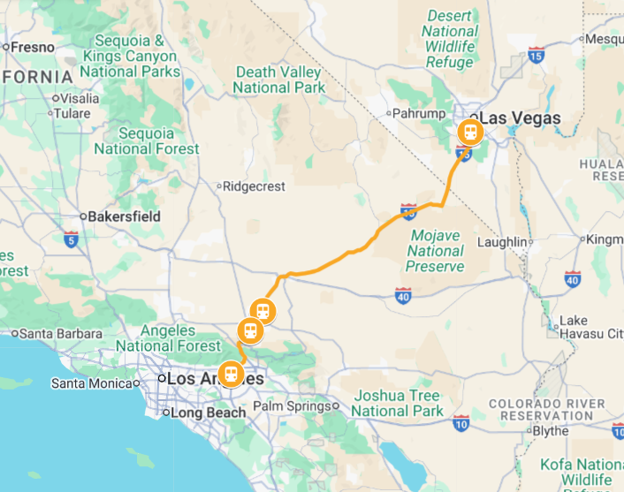
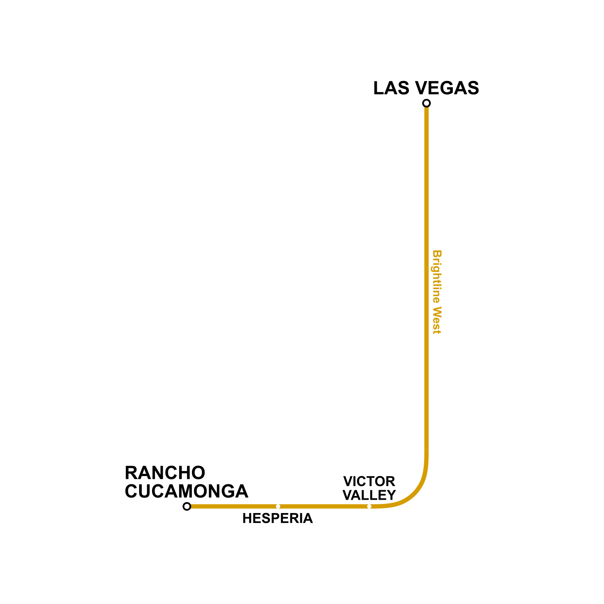

MAP OF CALIFORNIA HIGH SPEED RAIL AND BRIGHTLINE WEST
MAP BREAKDOWN


-All the labels are in English and Spanish.

-San Francisco Bay Area is the 5th most populous urban area in the US.
-San Francisco 4th and King Street Station is the primary railhead of San Francisco.
-San Francisco 4th and King Street Station is the primary railhead of San Francisco.

-Greater Los Angeles area includes the cities of Los Angeles, Long Beach, Orange County, Anaheim,San Bernardino and others.
-Greater Los Angeles area is the second largest metropolitan area after New York City in the United States.
-Greater Los Angeles area is the second largest metropolitan area after New York City in the United States.


-The geographical routes was identified using Google Maps.
-The stations were equally placed alone the lines.